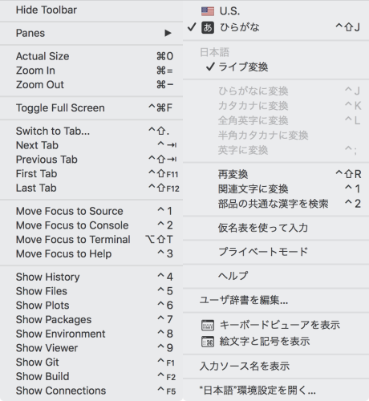
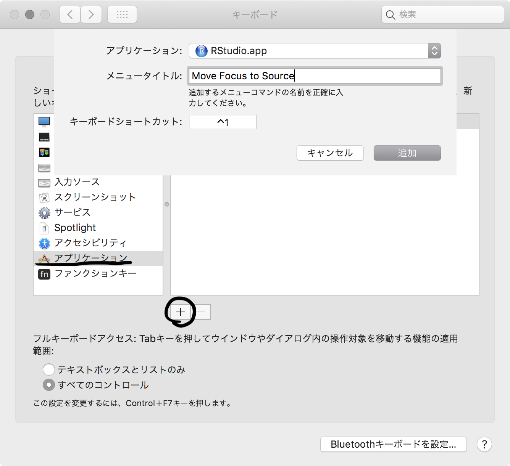
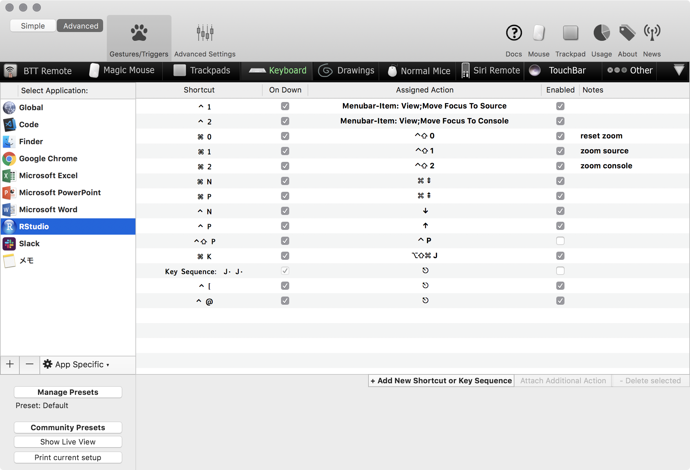
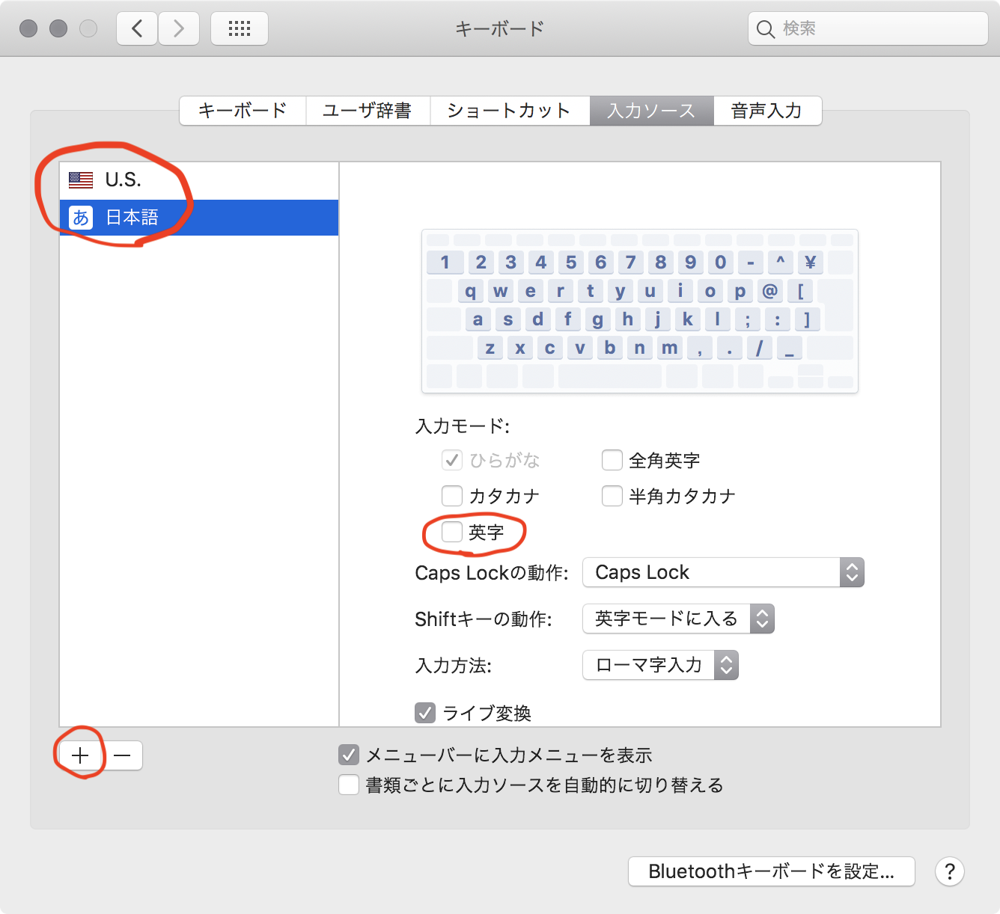
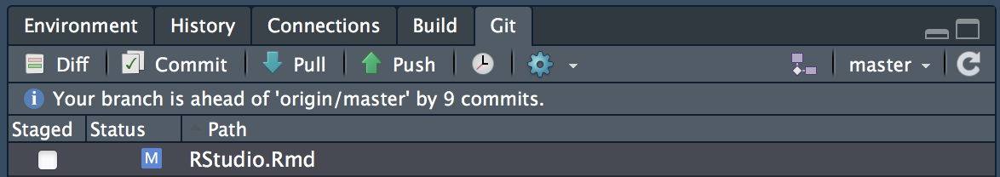
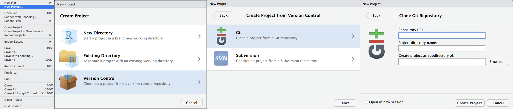
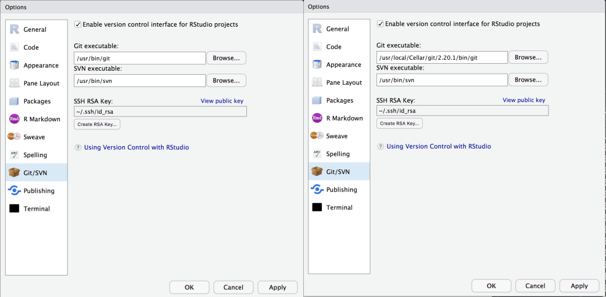

再現可能性を高めるため、.RDataなどの自動保存は使わず、.RDSの単体データファイルで保存するようにする。
テーマはSolaraizedテーマの通りに設定。フォントはRicty Discord。エディタはVimキーバインドに。 毎回「:imap jj
メニュー項目になく、かつもともとショートカットが設定されていないものについては残念ながらBetterTouchToolでは設定できないので個別に手動設定。
⌘+⇧+,：Insert Assignment Operator （<-をうまく入力してくれる）Sys.getenv("RSTUDIO")はRStudioでは“1”、それ以外では""を返すので、!is.na(Sys.getenv("RSTUDIO", unset = NA))で判定可能
あるいはrstudioapi::isAvailable()でも行けるか？ただこちらはR --vanillaではloadNamespace(name)エラーが出て動かない。
View > Move Focus to SourceとView > Move Focus to ConsoleのショートカットキーがそれぞれCtrl + 1, Ctrl + 2になっており、これがmacOSの標準日本語入力の「関連文字に変換」と「部品の共通な漢字を検索」と被ってしまっているため利用できない。

解決策としては
の2通りがあるが、1.の方法では使用するmac毎に設定の必要がある上にいまいち挙動が不安定な印象があることから、2.の方法を採用している。

こちらの方が確実に動作し、かつ同期機能を使えば設定1回で済むため採用。

macOSのターミナルやRStudioの他のウインドウでは全く問題ないのに、ターミナルでだけ効かなくなる。入力方法を「U.S.」と「ひらがな」の組み合わせにすることでひとまずは解決する。「日本語」の「英字」と「ひらがな」にしていたため起こった模様。「英字」でも他のアプリケーションで問題になったことはなかったが……。報告は一応した。 Terminal in RStudio doesn’t accept key input from Japanese Romaji input source (normally works like U.S. mode) · Issue #2243 · rstudio/rstudio

RStudio で利用できるプロジェクト管理。Rのメモや学会発表・論文ごとに区切ることで雑多になりすぎずに管理できそう。またRStudioをプロジェクトごとに別プロセスで立ち上げることができる。
特に学会発表や論文用では再現性の確保のためにも
が可能なのは大きい。
Gitによる管理についてはRStudioではじめるGitによるバージョン管理 - Qiitaに全てまとまっている。
.Rprofile ## プロジェクト用の設定
.gitignore ## バージョン管理しないファイルやフォルダを指定
data ## 元データファイルや整形したR用のデータファイル
img ## 説明などに使う外部イメージなど
plot ## 出力したグラフなどの図
packrat ## パッケージバージョン管理用（自動作成）
プロジェクト名.Rproj
各分析用ファイルなど.Rmd
その結果表示用.htmlのような構成になる。packratはそれなりに容量を食うので学会発表・論文用のものに限った方がよさそう。
解析のためのフォルダ構成 - Qiitaが一番良さそう？
Pythonメインになるが資料
knitr::include_graphics("img/RStudio-GitPanel.png")
RStudioではじめるGitによるバージョン管理：リモートリポジトリを設定するをよく読む。
File > New Projectで出てくるダイアログでVersion Control、Gitと選択してGitHubのgitアドレスを入力、どのディレクトリの下にプロジェクトディレクトリを作るかを決めるだけ。

Gitタブの歯車アイコン > Shellかターミナルでプロジェクトディレクトリにcdしてから
git remote add origin https://github.com/"GitHubのユーザ名"/"リポジトリ名".gitで登録される。git remote -vで設定を確認できる。
RStudioのデフォルトでは/usr/bin/gitが設定されている。Homebrewを使ってインストールしていると/usr/local/bin/gitに最新版があるが、これはシンボリックリンクなので実体は/usr/local/Cellar/git/2.20.1/bin/gitのようになっている。RStudioの設定から/usr/local/bin/gitを選択すると、/usr/local/Cellar/git/2.20.1/bin/gitに設定されてしまう。これだとHomebrewでアップデートした際に問題が生じそう。とりあえずmacOS mojaveのプリインストール版でも問題はなさそうなのでそのままにすることにする。

$ /usr/bin/git --version
git version 2.17.2 (Apple Git-113)
$ /usr/local/bin/git --version
git version 2.20.1